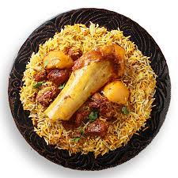

NALI BIRYANI

INGREDIENT
- BOiling Water as required
- Zeera (Cumin seeds) 1 tsp
- Badiyan ka phool (Star anise) 2
- Darchini (Cinnamon sticks) 2
- Sabut kali mirch (Black pepperCorns) ½ tsp
- Chawal (RIce) 700 gms (soaked)
-
FOR QORMA
Cooking Oil ¾ Cup Pyaz (Onion) slIced 3 medium
Adrak lehsan paste (Ginger Garlic paste) 2 tbs
Tez paat (Bay leaves) 2
Zeera (Cumin seeds) ½ tbs
Laung (Cloves) 5-6
Darchini (Cinnamon sticks) 2-3
Badi elaichi (Black Cardamom) 2
Hari elaichi (Green Cardamom) 5-6
Badiyan ka phool (Star anise) 3-4
Jaifil (Nutmeg) 2 small pieces
Javatri (Mace) 2 pieces
Beef mix boti ½ kg
Nalli (Bone marrow) ½ kg
Lal mirch powder (Red chili powder) 1 tbs or to taste
Haldee powder (Turmeric powder) 1 tsp
Lal mirch (Red chili) crushed ½ tsp
Dhania powder (Coriander powder) ½ tbs
Namak (Salt) 1 tbs or to taste
Tamatar (Tomatoes) peeled & cubes 3 large
Hari mirch (Green chili) crushed 1 tbs
Pani (Water) 2-3 Cups or as required
Dahi (Yogurt) whisked 1 Cup
Garam masala powder 1 tsp
Aloo bukhara (Dried Plums) 10-12 soaked
Podina (Mint leaves) chopped ½ Cup
Biryani Essence ¼ tsp
Doodh (Milk) ¼ Cup
Zarda ka rang (Yellow food color) ½ tsp or as required
Ghee 2 tbs
HOW TO MAKE NALI BIRYANI
IN boiling water, add salt, bay leaves, cumin seeds, star anise, cinnamon sticks, black peppercorns, cooking oil
and vinegar, mix well and bring it to boil. Add rice and boil until ¾ done then strain & set aside. In pot,add
cooking oil,onion and fry until light golden. Add ginger garlic paste and mix well. Add bay leaves, cumin seeds,
cloves, cinnamon sticks, black cardamom, green cardamom, star anise, nutmeg, mace and mix well. Add beef mix
both and mix well until changes color. Add bone marrow and mix well. Add red chili powder, turmeric powder, red
chili crushed, coriander powder, salt and mix well for 3-4 minutes. Add tomatoes and mix well, cover and cook on
low flame until tomatoes are soft. Add green chilies and mix well. Add water and mix well, cover and cook until
meat is tender (approx. 1 hour). Now remove cooked bone marrow and set aside. Cover and cook until gravy is
reduced to half quantity. Add yogurt, mix well and cook until oil separates (4-5 minutes). Add garam masala
powder and mix well. Add dried plums and mix well. Add mint leaves, boiled rice, and biryani essence. In milk,
add yellow food color, mix well and add in it. Add ghee, cooked bone marrow, cover and steam cook on low flame
for 10-15 minutes.
YOUR NALI BIRYANI IS READY